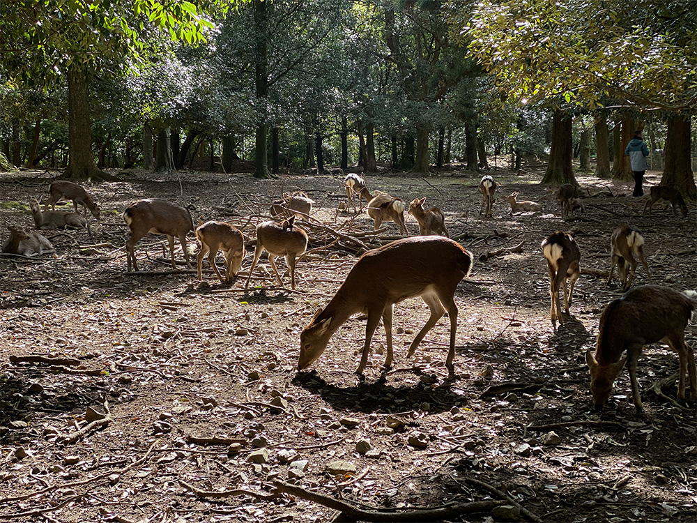
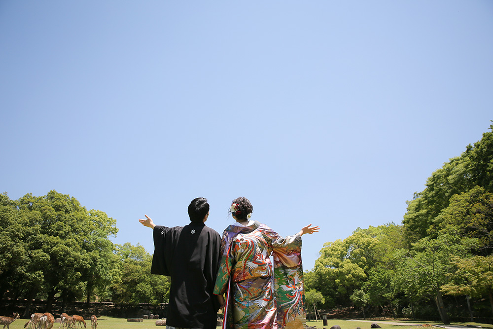

Profile
I am...
渡部 舞子 Watanabe Maiko
出身地 ▷▶︎▷ 大阪府豊中市
Like
子供と同じ目線になって遊ぶこと
B'zが大好き。ドライブの時は必ず車内でBGMとしてかかっている
バスケットボール。今も高校の同級生とクラブチームで大会に参加したりしている

Off day
奈良に遊びに行く
家族でNiziUを見る
ラーメンめぐり（彩華・無鉄砲・横綱が特に好き）

Future vision
依頼者の思いや背景をくみ取り、形にするプロフェッショナルになりたい。
渡部舞子にデザインやサイト作成を依頼したいと思ってもらえるWebデザイナーになる。
子供が自慢したくなる母になる。